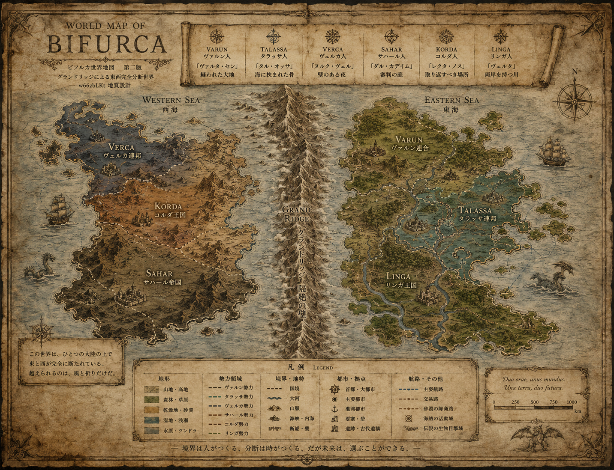

架空世界設定アーカイブ — Speculative World Archive
BIFURCAビフルカ
「二つに分かれた」という意味の世界。
ただし分岐の語源は、かつて一つだった幹を含意する。
World Overview — 世界概要
East — 東大陸群
暖流・大河・農業文明
ノルド東洋・赤道東洋・南東洋の三大陸。農業余剰から都市化、商業、工業へと段階的に発展。海洋帝国を形成し、グランドリッジを越えて西大陸の植民地化を進めた。
West — 西大陸群
独自文化・口承・共同体
ノルド西洋・赤道西洋・南西洋の三大陸。農業文明型とは異なる、遊牧・隊商・都市国家連合の形で高度に進化した文化圏。六民族はかつて共通の祖語「古西語」を持った。
Grand Ridge — グランドリッジ
世界の背骨・第三の文化圏
北極点から南極点まで連続する超山脈。平均標高6,500m。東西を5,000年以上遮断してきた。峠帯を管理するリンガ人が「第三の文化圏」として両世界の間に立つ。
世界地図

ヴァルン人はこの世界を「縫われた大地」と呼んだ。
タラッサ人は「海に挟まれた骨」と呼んだ。
ヴェルカ人は「壁のある夜」と呼んだ。
サハール人は「審判の庭」と呼んだ。
コルダ人は「取り返すべき場所」と呼んだ。
リンガ人だけが、それを「川」と呼んだ。
我々はこの世界を「ビフルカ」と呼ぶ。二つに分かれた、という意味だ。
——ビフルカ世界用語辞典 第二版 扉より
このアーカイブについて
このサイトは、匿名掲示板スレッド「なんで先進国って北半球に偏ってるの？」から始まった世界観構築の全記録です。地質学者、気候科学者、経済学者、民俗学者、言語学者、考古学者、軍事史家、社会学者、ゲームデザイナー、そして高校生まで——多様な「専門家」が集まり、架空世界「ビフルカ」を協働で設計しました。
コンテンツ